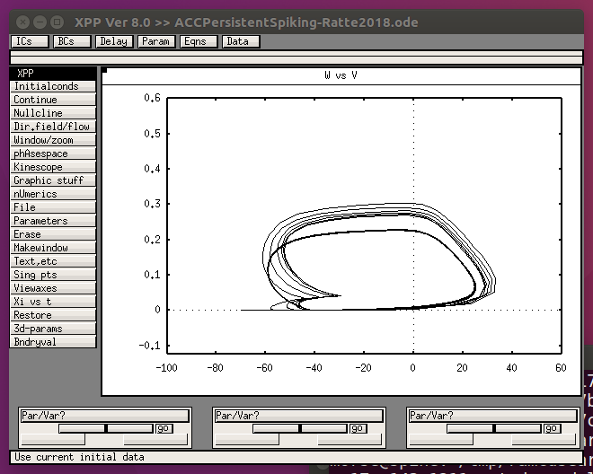
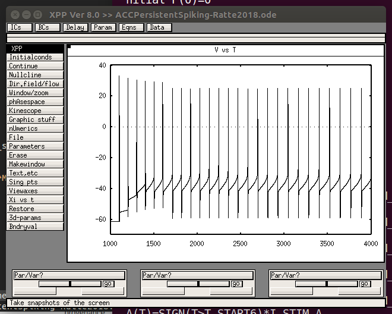
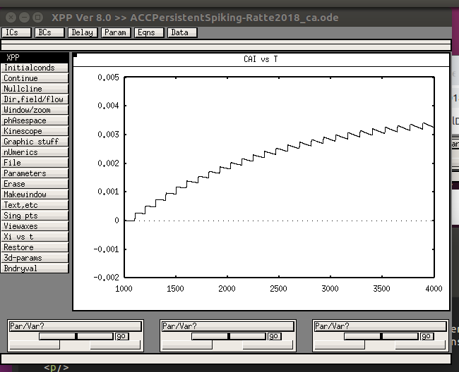

The XPP code for the model associated with the paper:
Ratté S, Karnup S, Prescott SA (2018) Nonlinear Relationship Between Spike-Dependent Calcium Influx and TRPC Channel Activation Enables Robust Persistent Spiking in Neurons of the Anterior Cingulate Cortex. J Neurosci 38:1788-1801
http://dx.doi.org/10.1523/JNEUROSCI.0538-17.2018
is available at the authors web site:
http://prescottlab.ca/code-for-models
and in this ModelDB archive.
This model requires the freely available XPP which can be downloaded here:
http://www.math.pitt.edu/~bard/xpp/xpp.html
Usage:
------
When the model runs in its default configuration by starting it with a command like (linux):
xppaut ACCPersistentSpiking-Ratte2018.ode
and then selecting "Initialconds -> Go" it should display a graph similar to this:

A version of the model which graphs the voltage is supplied (ends with _v.ode):

and another (file ends with _ca.ode) which graphs calcium:

which are similar to Figure 8 A (top and middle traces on right) in the paper.